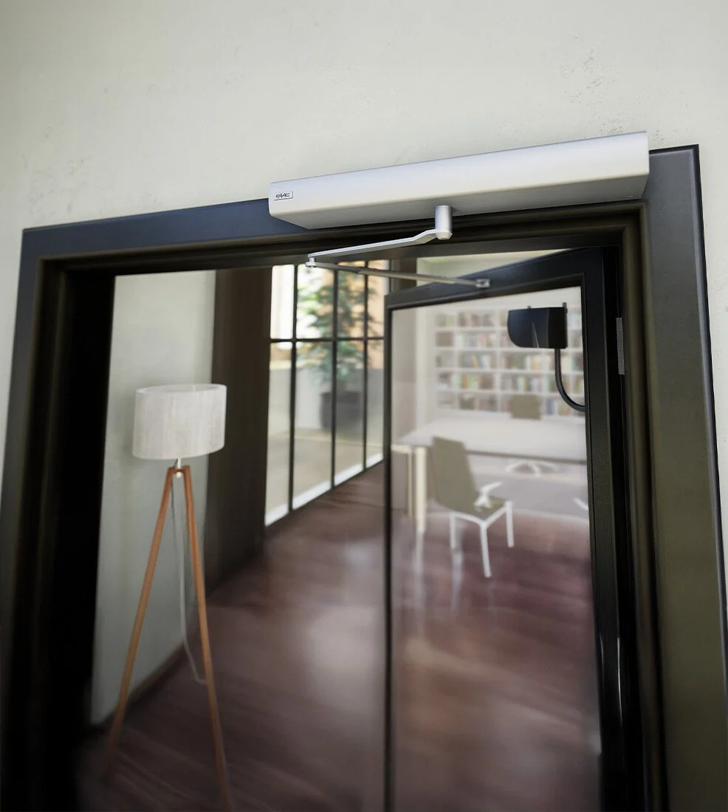
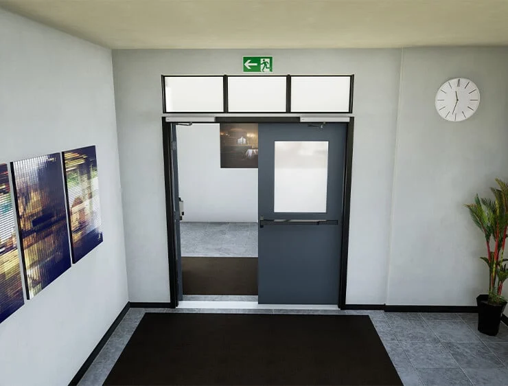
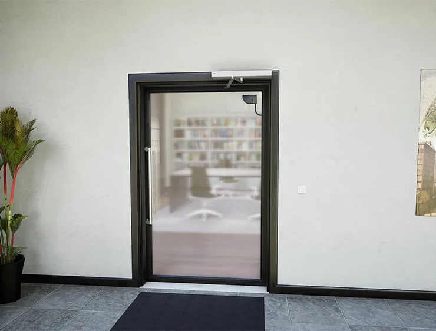

Automatismo para hojas batientes con peso hasta 450kg a 36v.
El automatismo A952, conforme a EN16005, permite mover la puerta, con peso hasta 450Kg, en absoluto silencio y servicio continuo. Puede instalarse en vías de evacuación cumpliendo la EN16005 y todos los criterios de seguridad de la normativa EN13489-1 PI.D.
Piñón y cremallera de relación variable para una compresión constante del resorte (PATENTE FAAC).
Engranajes de ejes paralelos de relación variable para un movimiento fluido y efectivo (PATENTE FAAC).
Dimensiones compactas, ideal para puertas cortafuego y evacuadores de humo.
La carcasa de cobertura es de aluminio anodizado plateado.
Declaración Ambiental del Producto EPD (certificación que describe el desempeño ambiental del ciclo de vida del producto según el estándar internacional ISO 14025).


Gracias al sistema especial de resorte, con función de apertura o cierre según el tipo de instalación (brazo deslizante o articulado), la automatización A952 destaca no solo por su alta seguridad, sino también por su extrema versatilidad.
Con un solo automatismo es posible transformar puertas batientes para diferentes usos: estándar, vía de evacuación, cortafuego o evacuador de humo, adaptables a escuelas, aeropuertos, hospitales, hoteles, condominios y oficinas.

Dimensiones compactas: 73 x 150 x 715 mm
Resorte de alto rendimiento: probado por más de 1.000.000 de ciclos
Para hojas grandes: hasta 1600 mm de ancho y 450 kg de peso
Brazos resistentes: momento de inercia hasta 130 kg·m² con brazo deslizante o articulado
Información técnica